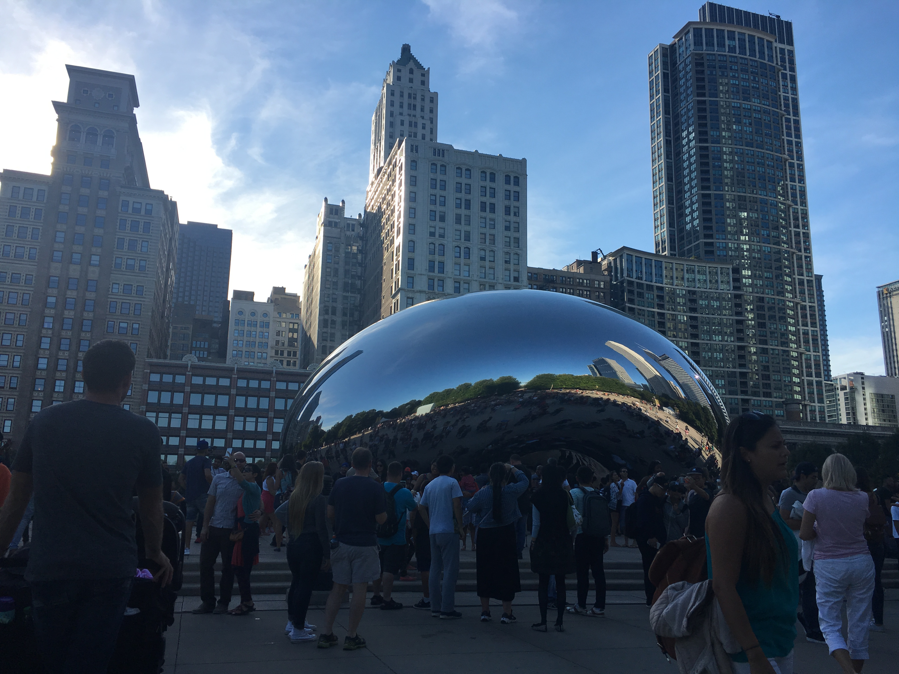
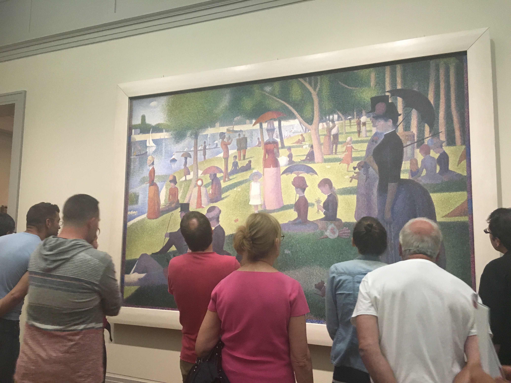
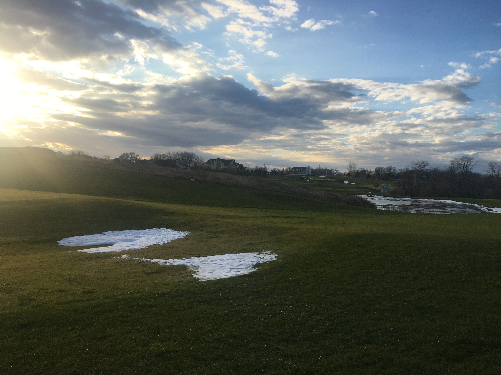
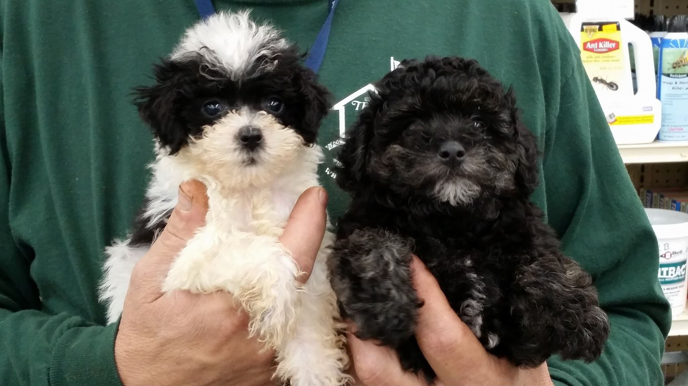
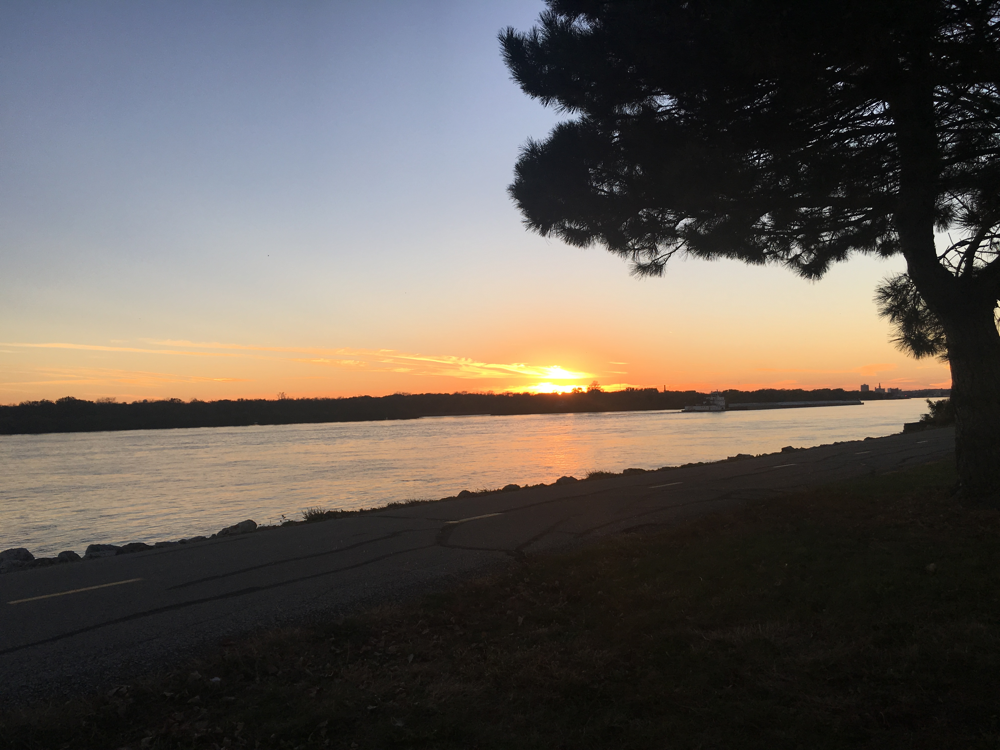
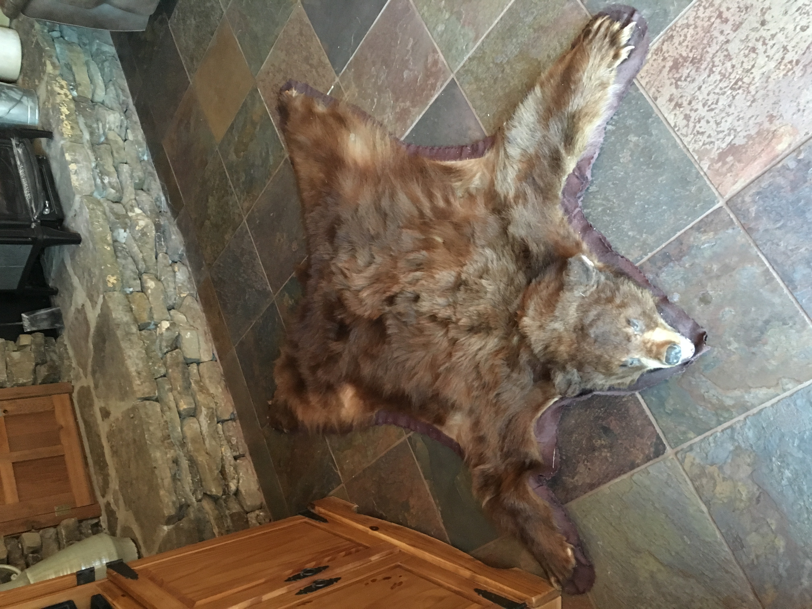
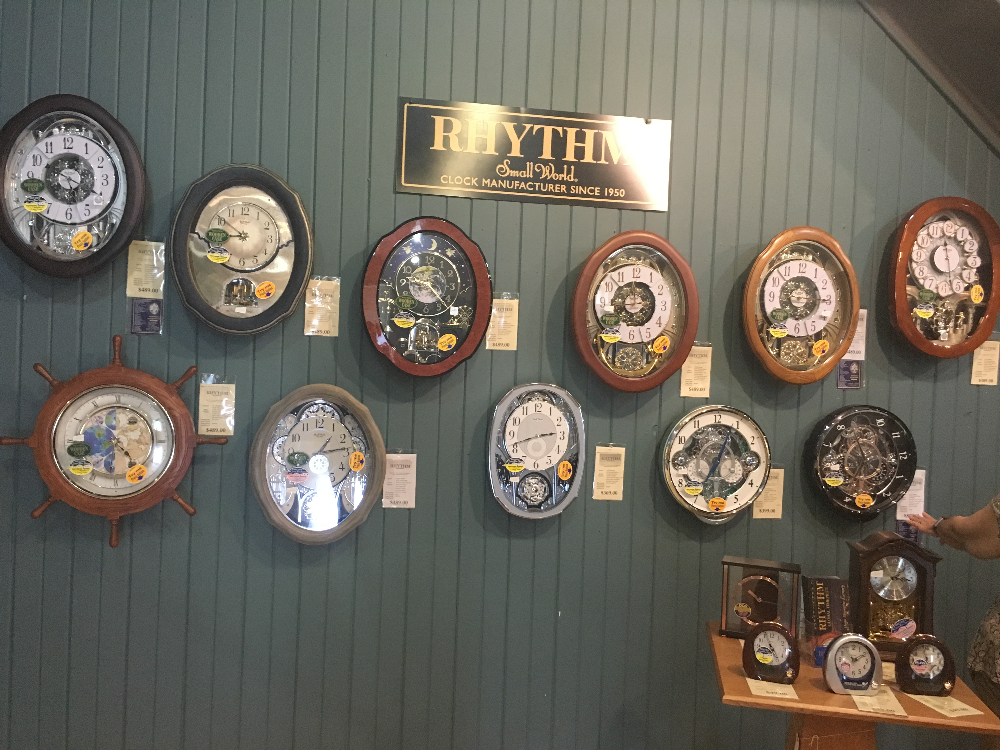

Chicago
- Cloud Gate
-  Art Institute of Chicago
To most people, this stainless steel figure is a work of art – but to tourists, it's the best opportunity for a selfie. The Cloud Gate sculpture also known as 'the Bean,' is one of the top things to see in Chicago. The bean is a large public sculpture that was unveiled at the opening of Millennium Park in 2004.
The Art Institute boasts the largest collection of impressionist art outside of Paris. Ponder the mesmerizing landscape of Seurat’s A Sunday on La Grande Jatte and peer into the 19th-century before Gustav Caillebotte's Paris Street; Rainy Day. In the American collection, marvel at iconic works like the Nighthawks diner scene by Edward Hopper and the Midwestern farmer and daughter depicted in Grant Wood’s American Gothic.
Iowa
- My place
- Birthday!
- My favourite pets
-  Sunset
Iowa is a U.S. state in the Midwestern United States, bordered by the Mississippi River to the east and the Missouri and Big Sioux rivers to the west. It is bordered by six states; Wisconsin to the northeast, Illinois to the east, Missouri to the south, Nebraska to the west, South Dakota to the northwest, and Minnesota to the north
Missouri
- Bear Mat
- Small town
 Sunset
Sunset
Missouri is a state in the Midwestern United States. With over six million residents, it is the 18th-most populous state of the Union. The largest urban areas are St. Louis, Kansas City, Springfield, and Columbia; the capital is Jefferson City, near the center of the state on the Missouri River. The state is the 21st-most extensive in area. In the South are the Ozarks, a forested highland, providing timber, minerals, and recreation. The Mississippi River forms the eastern border of the state.